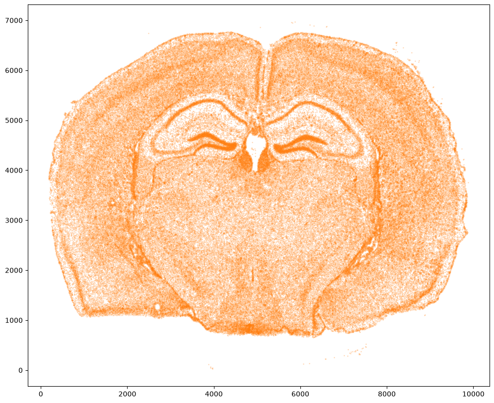
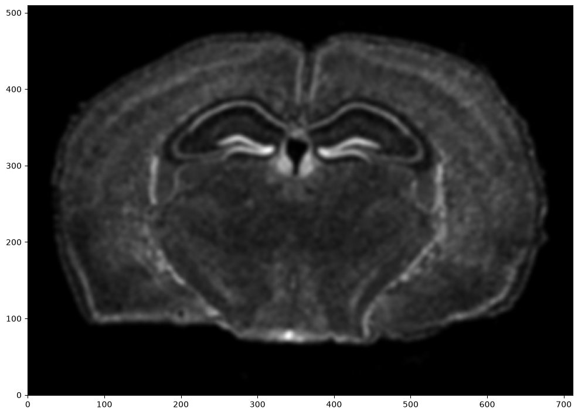
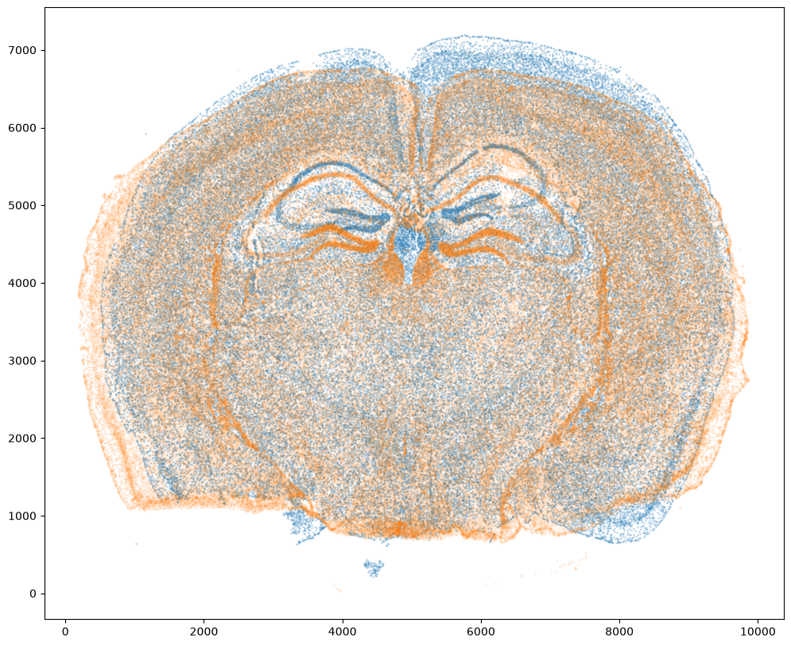
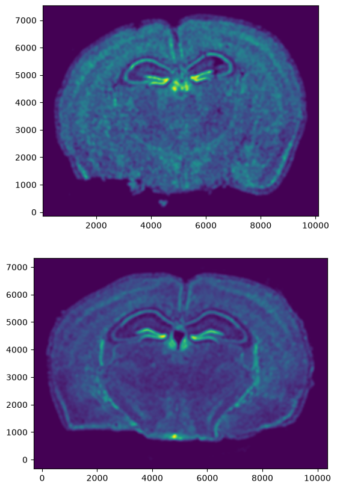
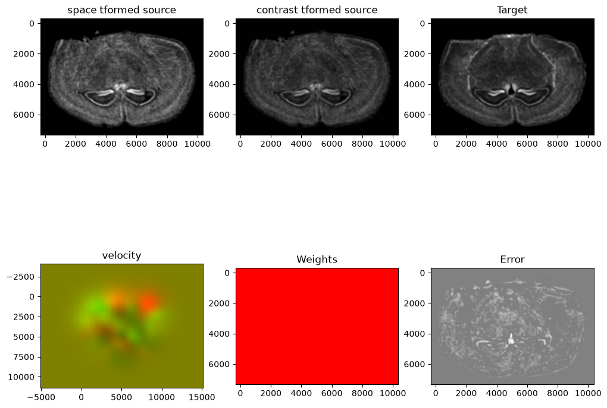
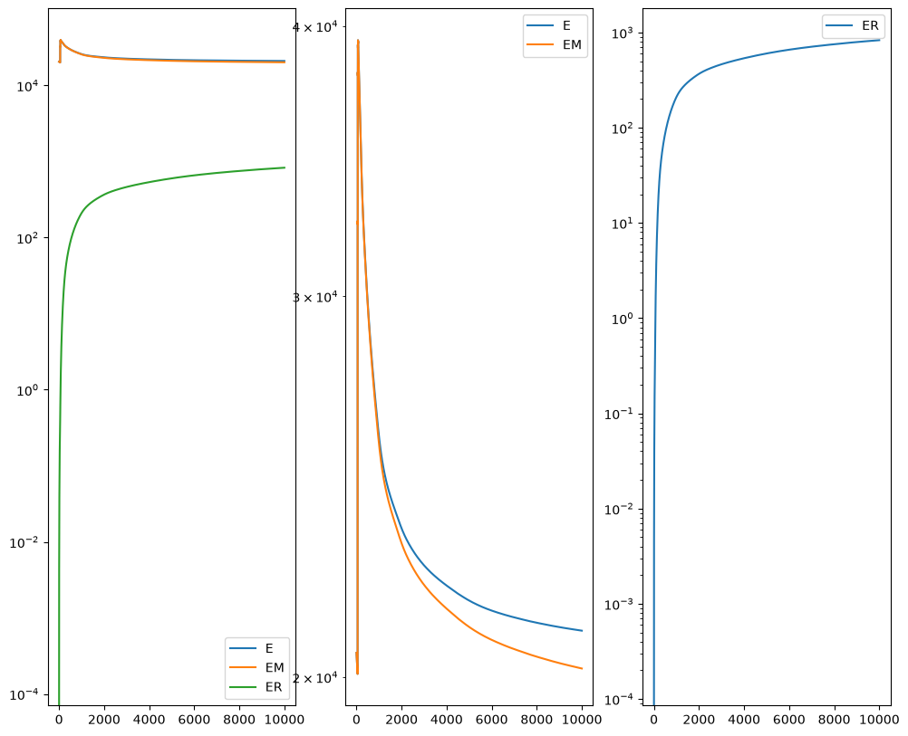
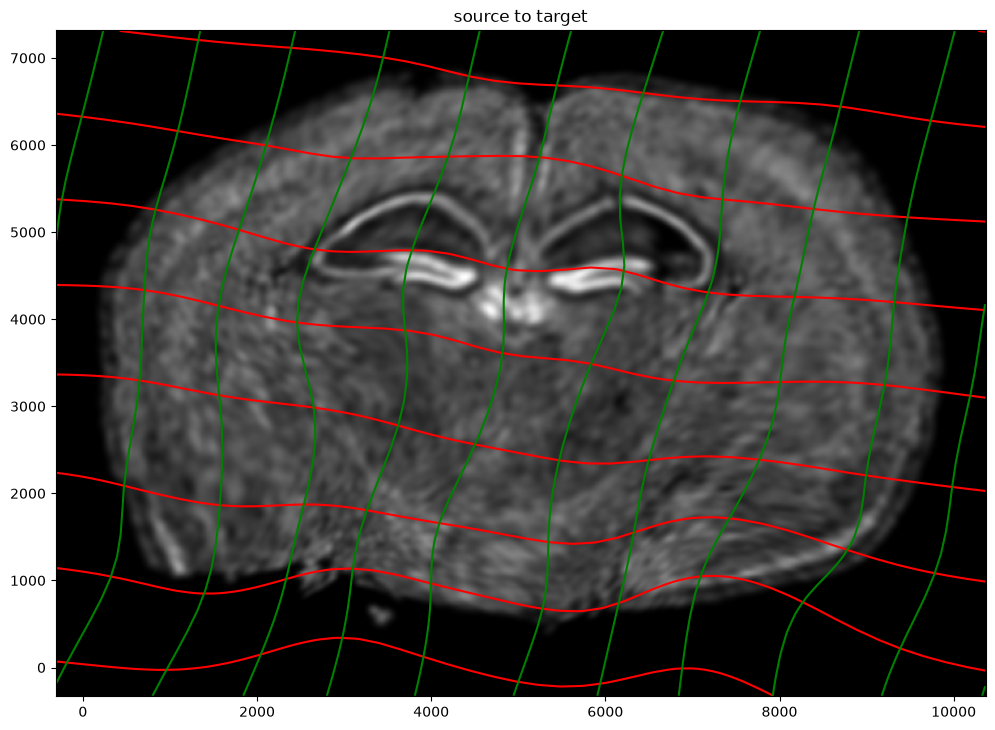
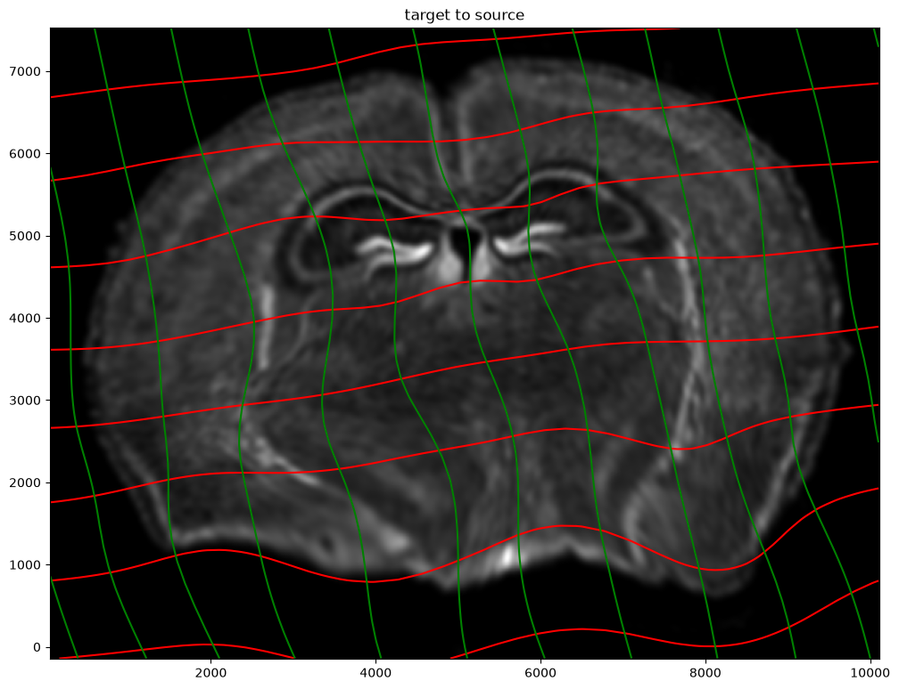
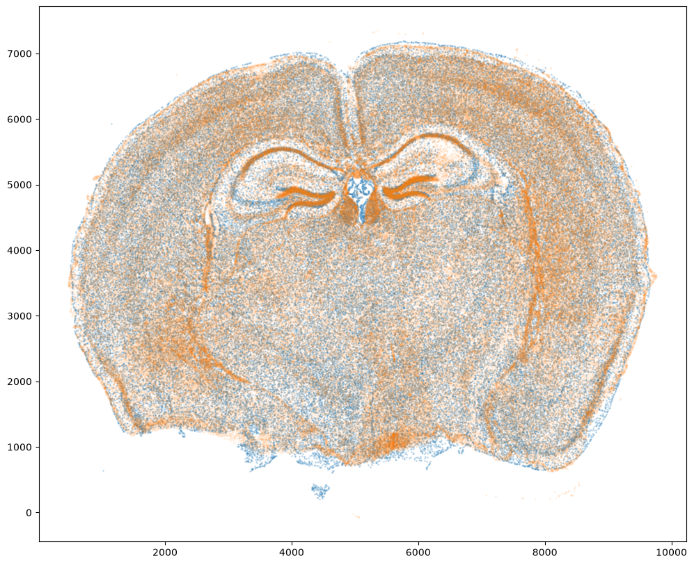
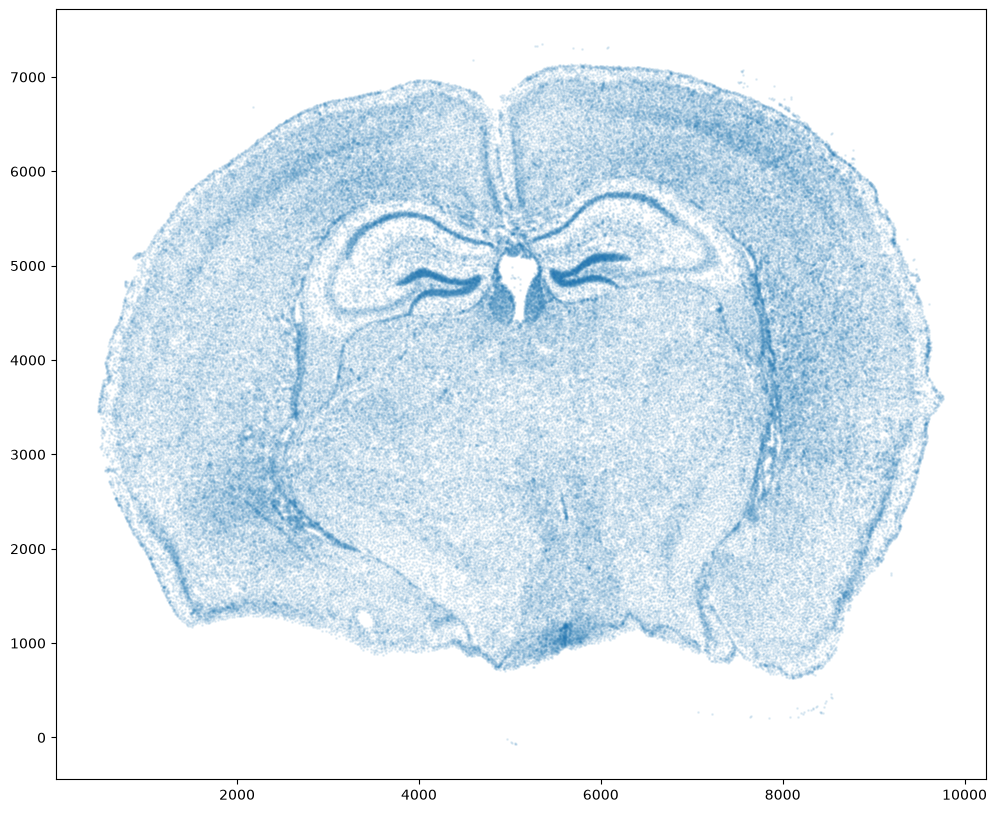

Aligning full coronal sections of adult mouse brain from MERFISH and Xenium
In this notebook, we align two single cell resolution spatial transcriptomics datasets of full coronal sections of the adult mouse brain from approximately the same locations assayed by MERFISH and Xenium.
We will use STalign to achieve this alignment. We will first load the relevant code libraries.
[1]:
# import dependencies
import numpy as np
import matplotlib.pyplot as plt
import pandas as pd
import torch
# import STalign from upper directory
# skip next 2 lines if STalign.py in same folder as notebook
import sys
sys.path.append("../../STalign")
import STalign
# make plots bigger
plt.rcParams["figure.figsize"] = (12,10)
We have already downloaded single cell spatial transcriptomics datasets and placed the files in a folder called merfish_data and xenium_data.
We can read in the cell information for the first dataset using pandas as pd.
[2]:
# Single cell data 1
# read in data
fname = '../merfish_data/datasets_mouse_brain_map_BrainReceptorShowcase_Slice2_Replicate3_cell_metadata_S2R3.csv.gz'
df1 = pd.read_csv(fname)
print(df1.head())
Unnamed: 0 fov volume center_x \
0 158338042824236264719696604356349910479 33 532.778772 617.916619
1 260594727341160372355976405428092853003 33 1004.430016 596.808018
2 307643940700812339199503248604719950662 33 1267.183208 578.880018
3 30863303465976316429997331474071348973 33 1403.401822 572.616017
4 313162718584097621688679244357302162401 33 507.949497 608.364018
center_y min_x max_x min_y max_y
0 2666.520010 614.725219 621.108019 2657.545209 2675.494810
1 2763.450012 589.669218 603.946818 2757.013212 2769.886812
2 2748.978012 570.877217 586.882818 2740.489211 2757.466812
3 2766.690012 564.937217 580.294818 2756.581212 2776.798812
4 2687.418010 603.061218 613.666818 2682.493210 2692.342810
For alignment with STalign, we only need the cell centroid information. So we can pull out this information. We can further visualize the cell centroids to get a sense of the variation in cell density that we will be relying on for our alignment by plotting using matplotlib.pyplot as plt.
[3]:
# get cell centroid coordinates
xI = np.array(df1['center_x'])
yI = np.array(df1['center_y'])
# plot
fig,ax = plt.subplots()
ax.scatter(xI,yI,s=1,alpha=0.2)
[3]:
<matplotlib.collections.PathCollection at 0x144f87e90>

We will first use STalign to rasterize the single cell centroid positions into an image. Assuming the single-cell centroid coordinates are in microns, we will perform this rasterization at a 30 micron resolution. We can visualize the resulting rasterized image.
Note that points are plotting with the origin at bottom left while images are typically plotted with origin at top left so we’ve used invert_yaxis() to invert the yaxis for visualization consistency.
[4]:
# rasterize at 30um resolution (assuming positions are in um units) and plot
XI,YI,I,fig = STalign.rasterize(xI,yI,dx=15,blur=1.5)
# plot
ax = fig.axes[0]
ax.invert_yaxis()

Now, we can repeat this for the cell information from the second dataset.
[5]:
# Single cell data 2
# read in data
fname = '../xenium_data/Xenium_V1_FF_Mouse_Brain_MultiSection_1_cells.csv.gz'
df2 = pd.read_csv(fname)
# get cell centroids
xJ = np.array(df2['x_centroid'])
yJ = np.array(df2['y_centroid'])
# plot
fig,ax = plt.subplots()
ax.scatter(xJ,yJ,s=1,alpha=0.2,c='#ff7f0e')
# rasterize and plot
XJ,YJ,J,fig = STalign.rasterize(xJ,yJ,dx=15, blur=1.5)
ax = fig.axes[0]
ax.invert_yaxis()


Note that plotting the cell centroid positions from both datasets shows that non-linear local alignment is needed.
[6]:
# plot
fig,ax = plt.subplots()
ax.scatter(xI,yI,s=1,alpha=0.2)
ax.scatter(xJ,yJ,s=1,alpha=0.1)
[6]:
<matplotlib.collections.PathCollection at 0x147edf470>

We can also plot the rasterized images next to each other.
[7]:
# get extent of images
extentI = STalign.extent_from_x((YI,XI))
extentJ = STalign.extent_from_x((YJ,XJ))
# plot rasterized images
fig,ax = plt.subplots(2,1)
ax[0].imshow((I.transpose(1,2,0).squeeze()), extent=extentI) # just want 201x276 matrix
ax[1].imshow((J.transpose(1,2,0).squeeze()), extent=extentJ) # just want 201x276 matrix
ax[0].invert_yaxis()
ax[1].invert_yaxis()

Now we will perform our alignment. There are many parameters that can be tuned for performing this alignment. If we don’t specify parameters, defaults will be used.
[8]:
%%time
# run LDDMM
# specify device (default device for STalign.LDDMM is cpu)
if torch.cuda.is_available():
device = 'cuda:0'
else:
device = 'cpu'
# keep all other parameters default
params = {
'niter': 10000,
'device':device,
'epV': 50
}
Ifoo = np.vstack((I, I, I)) # make RGB instead of greyscale
Jfoo = np.vstack((J, J, J)) # make RGB instead of greyscale
out = STalign.LDDMM([YI,XI],Ifoo,[YJ,XJ],Jfoo,**params)
CPU times: user 7min 6s, sys: 4.55 s, total: 7min 11s
Wall time: 29.9 s



[9]:
# get necessary output variables
A = out['A']
v = out['v']
xv = out['xv']
Plots generated throughout the alignment can be used to give you a sense of whether the parameter choices are appropriate and whether your alignment is converging on a solution.
We can also evaluate the resulting alignment by applying the transformation to visualize how our source and target images were deformed to achieve the alignment.
[10]:
# apply transform
phii = STalign.build_transform(xv,v,A,XJ=[YJ,XJ],direction='b')
phiI = STalign.transform_image_source_to_target(xv,v,A,[YI,XI],Ifoo,[YJ,XJ])
# plot with grids
fig,ax = plt.subplots()
levels = np.arange(-100000,100000,1000)
ax.contour(XJ,YJ,phii[...,0],colors='r',linestyles='-',levels=levels)
ax.contour(XJ,YJ,phii[...,1],colors='g',linestyles='-',levels=levels)
ax.set_aspect('equal')
ax.set_title('source to target')
ax.imshow(phiI.permute(1,2,0)/torch.max(phiI),extent=extentJ)
ax.invert_yaxis()

Note that because of our use of LDDMM, the resulting transformation is invertible.
[11]:
# transform is invertible
phi = STalign.build_transform(xv,v,A,XJ=[YI,XI],direction='f')
phiiJ = STalign.transform_image_target_to_source(xv,v,A,[YJ,XJ],Jfoo,[YI,XI])
# plot with grids
fig,ax = plt.subplots()
levels = np.arange(-100000,100000,1000)
ax.contour(XI,YI,phi[...,0],colors='r',linestyles='-',levels=levels)
ax.contour(XI,YI,phi[...,1],colors='g',linestyles='-',levels=levels)
ax.set_aspect('equal')
ax.set_title('target to source')
ax.imshow(phiiJ.permute(1,2,0)/torch.max(phiiJ),extent=extentI)
ax.invert_yaxis()

Finally, we can apply our transform to the original sets of single cell centroid positions to achieve their new aligned positions.
[12]:
# apply transform to original points
tpointsJ = STalign.transform_points_target_to_source(xv,v,A, np.stack([yJ, xJ], 1))
# just original points for visualizing later
tpointsI = np.stack([xI, yI])
And we can visualize the results.
[13]:
# plot results
fig,ax = plt.subplots()
ax.scatter(tpointsI[0,:],tpointsI[1,:],s=1,alpha=0.2)
ax.scatter(tpointsJ[:,1],tpointsJ[:,0],s=1,alpha=0.1) # also needs to plot as y,x not x,y
[13]:
<matplotlib.collections.PathCollection at 0x163e61e80>

We can also plot the transformed dataset by itself.
[14]:
fig,ax = plt.subplots()
ax.scatter(tpointsJ[:,1],tpointsJ[:,0],s=1,alpha=0.1) # also needs to plot as y,x not x,y
[14]:
<matplotlib.collections.PathCollection at 0x163d03da0>

[ ]: